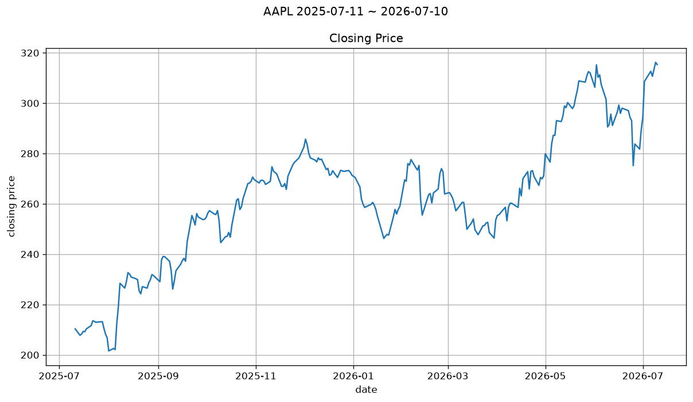
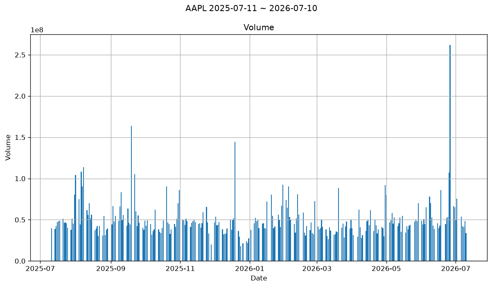
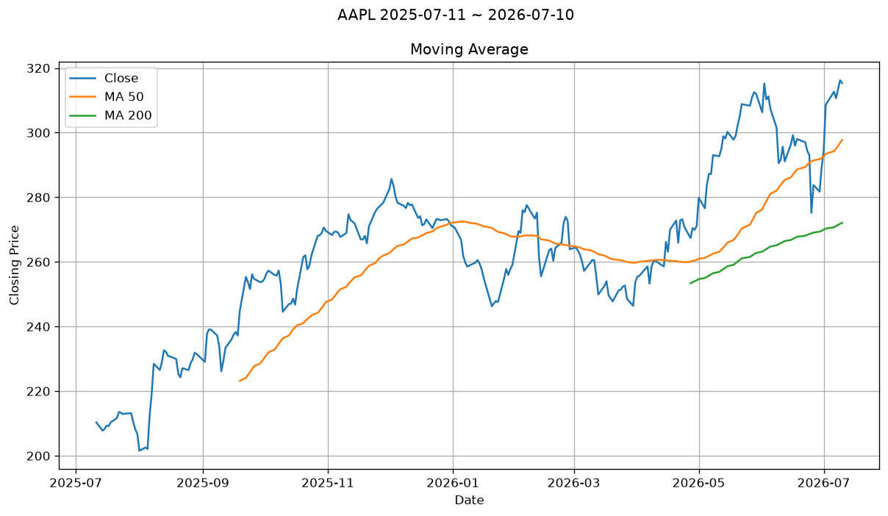
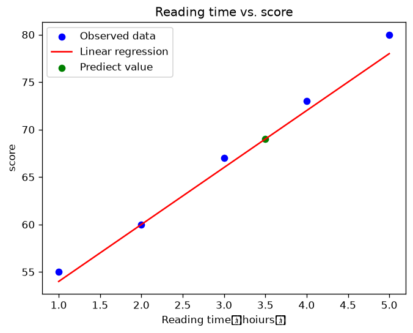
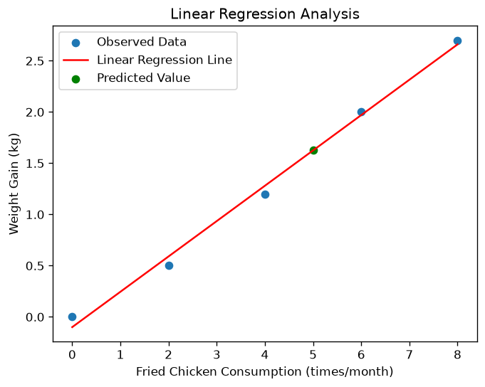
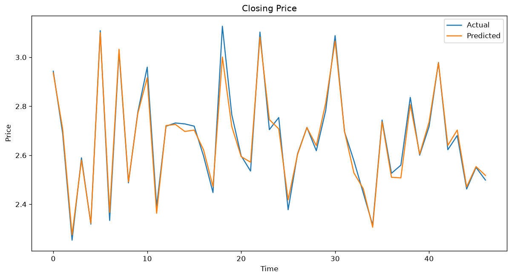

取得股票基本資料（Get Stock Data）
股票名稱： Apple Inc. 股票代號： AAPL 股票價格： 315.32
取得 AAPL 的基本資訊與過去一年歷史股價，純文字輸出。
核心概念：示範 yfinance 最基本的用法：用 Ticker 取得股票物件，讀取 .info 拿到基本資料、.history() 拿到歷史股價表格。
點卡片可直接看結果圖，也可以查看原始碼或到 Colab 親自執行、修改程式碼。
股票名稱： Apple Inc. 股票代號： AAPL 股票價格： 315.32
取得 AAPL 的基本資訊與過去一年歷史股價，純文字輸出。
核心概念：示範 yfinance 最基本的用法：用 Ticker 取得股票物件，讀取 .info 拿到基本資料、.history() 拿到歷史股價表格。
輸入 1-5 選擇股票（或自行輸入代號），畫出過去一年收盤價走勢圖。
核心概念：示範用 input() 做簡單的文字選單互動，讓使用者選擇要查詢的股票代號，再取資料畫圖。
教學範例 2、3 內容相同，皆可參考。

先選股票（1-5），再選時間區間（1-7），畫出對應區間的收盤價走勢圖。
核心概念：在選股票的基礎上，再加一層日期區間選單（1天到1年，或自行輸入起訖日期），示範多層互動選單的寫法。



固定以 AAPL 為例，依序畫出收盤價、成交量、50日與200日移動平均線，共三張圖。
核心概念：移動平均線（Moving Average）是把過去 N 天的收盤價取平均，用來平滑短期波動、觀察長期趨勢；50日與200日均線的交叉常被當作買賣訊號的參考。

用簡單公式手動示範線性回歸怎麼算，不使用 sklearn。
核心概念：用最小平方法的公式直接算出斜率與截距，讓學生理解線性回歸「背後在做什麼」，而不是只會呼叫套件。

換一組資料（炸雞次數與體重增加），再次手動計算回歸係數 b0、b1。
核心概念：同樣用最小平方法公式計算，並印出方程式 y = b1x + b0，讓學生比較不同資料集算出的係數意義。
預測結果： [[3.62707906]] 均方誤差： 0.4410838438776215 MSE： 0.4410838438776215
改用 sklearn 的 LinearRegression 訓練模型，並計算 MSE 評估準確度。
核心概念：從手算公式進階到呼叫 sklearn 套件，示範同一件事套件化之後怎麼寫；並用 MSE 量化模型的預測誤差。純數值輸出，無圖表。

取得真實股價，做特徵工程，訓練線性回歸模型預測收盤價。
核心概念：把前面學到的線性回歸應用在真實資料：計算 5日/20日移動平均與 RSI 當作特徵，訓練模型預測收盤價，並畫出預測值與實際值的對照圖，是整個系列的綜合應用範例。